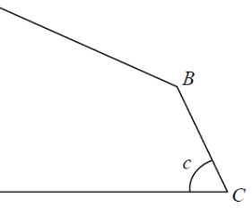

Let $E$ be the foot of the perpendicular from $B$ to $AD$, and $F$ the foot of the perpendicular from $B$ to $CD$.
So $BE \perp AD$ and $BF \perp CD$ → $E$ lies on $AD$, $F$ lies on $CD$.
Since $\angle EDF = \angle DEB = \angle DFB = 90^\circ$, the quadrilateral $BEDF$ is a rectangle.
Hence $ED = BF$, and $$AD = AE + ED = AE + BF.$$
In right triangle $ABE$ (right angle at $E$), the hypotenuse is $AB$ and the angle at $A$ is $\alpha$, so $$\cos\alpha = \frac{AE}{AB} \;\Longrightarrow\; AE = AB\cos\alpha.$$
In right triangle $BCF$ (right angle at $F$), the angle at $C$ is $c$, so $$\sin c = \frac{BF}{BC} \;\Longrightarrow\; BF = BC\sin c.$$
$$AD = AE + BF = AB\cos\alpha + BC\sin c.$$
So the answer is option B.